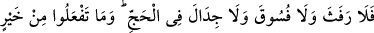
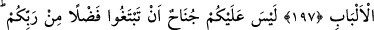

HAC VE UMRE
196. Haccı ve Umreyi Allah için tam yapın. Eğer (bunlardan) alıkonursanız
kolayınıza gelen kurbanı gönderin. Kurban, yerine varıncaya kadar başlarınızı tıraş
etmeyin. Sizden her kim hasta olursa yahut başından bir rahatsızlığı varsa, oruç
veya sadaka veya kurban olmak üzere fidye gerekir. (Hac yolculuğu için) emin